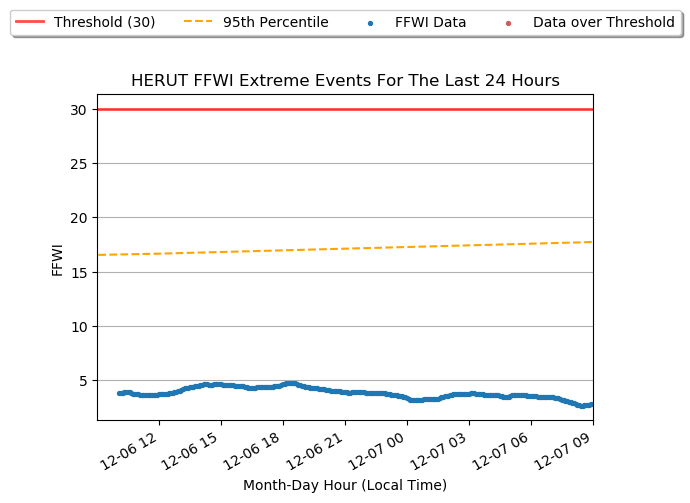

These summaries were derived from records archived by Synoptic Data PBC. While the entire state of Utah is prone to wildfires, many of these stations were selected due to their proximity to areas with higher risk.
This graph shows the last 24Hrs of data from HERUT. This data comes from the 6-hr. running mean of the Fosberg Fire Weather Index (FFWI). The red data points highlight periods when the FFWI exceeded the threshold. The orange dashed line is the 95th percentile values observed near that time of year based on the available data record.

| Station Name | Station ID | Network Type | First Data Date | Elevation (ft) |
| Herriman City UT | HERUT | UUNET | 2013-03-28 | 5144 |